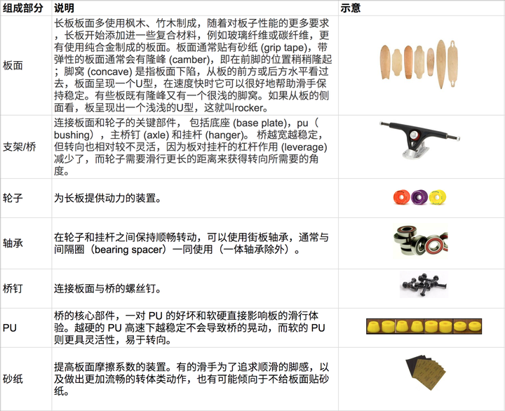

长板（Longboard）是一种与滑板（Skateboard）类似，但长度更长的滑板运动装备。最初起源于冲浪，现在的玩法众多，包括 Cruising（代步）、Dancing（舞蹈）、Freestyle（平地花式）、Downhill（速降）、Freeride（高速自由）、Slide（漂移）。每种玩法要求的板面、轮子、桥等长板配置也不尽相同。
长板与滑板一样，起源于美国，是一种滑板的变体形式。滑板最早起源于美国的西海岸，当时的南加州海滩附近居民几乎人人都是冲浪运动的爱好者，但是由于地理和天气的原因，冲浪运动并不是那么的自由及随心所欲，因此，人们开始尝试在冲浪板上加上金属的轮子，在陆地上滑行……随着各代滑手对技术的不断攀升，现在的滑板更加追求动作的丰富和技巧的多样，路面已经无法满足需求。长板运动开始飞快在各个地方普及。
长板还是滑板的组成类似，都是一个板面（deck）、两个支架/桥（trucks）、四个滑板轮（wheels）、八个轴承（bearings）、桥钉（hardware）和 PU、以及砂纸（griptape，也有些滑手追求光滑的脚感而不贴砂纸）。区别是长板的板面更大、更重、更长，轮子更大、更软，支架尺寸也更大一点等。
